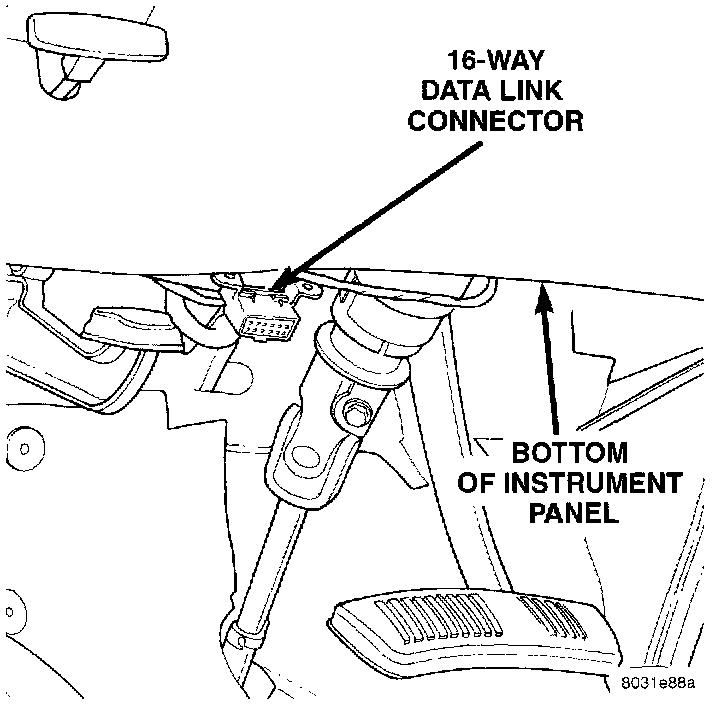

Initial Inspection and Diagnostic Overview
NOTE: A DRB scan tool is required for diagnosis of the airbag system. Refer to the Powertrain Management/Computer and Control Systems/Body Control Module/Testing and Inspection/Procedures for more information regarding testing of this system in relationship to the Body Control Module.Data Link Connector:

1. Disconnect and isolate the battery negative cable. If the airbag has not been deployed, wait two minutes for the system capacitor to discharge before further service.
2. Connect the DRB scan tool to the 16-way data link wire harness connector. The connector is located on the driver side lower edge of the instrument panel, outboard of the steering column.
3. Turn the ignition switch to the On position. Exit the vehicle with the DRB. Use the latest version of the proper DRB cartridge.
4. After checking that nobody is inside the vehicle, reconnect the battery negative cable.
5. Using the DRB, read and record the active Diagnostic Trouble Code (DTC) data.
6. Read and record any stored DTC data.
7. Refer to Powertrain Management/Computers and Controls/Body Control Module if any DTC is found in Step 5 or Step 6.
8. Erase the stored DTC data. If any problems remain, the stored DTC data will not erase.
9. With the ignition switch still in the On position, make sure nobody is in the vehicle.
10. From outside of the vehicle (away from the airbag modules in case of an accidental deployment) turn the ignition switch to the Off position for about ten seconds, and then back to the On position. Observe the airbag indicator lamp in the instrument cluster. It should light for six to eight seconds, and then go out. This indicates that the airbag system is functioning normally.
NOTE: If the airbag indicator lamp fails to light, or lights and stays on, there is an airbag system malfunction. Refer to Powertrain Management/Computers and Controls/Body Control Module.